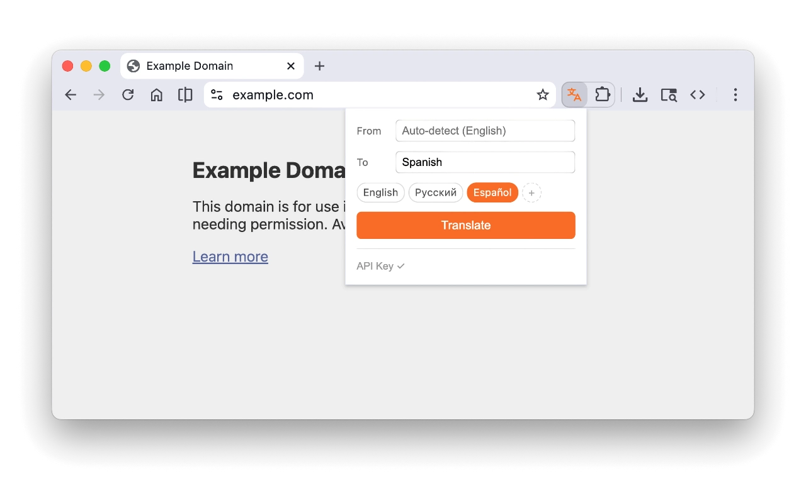
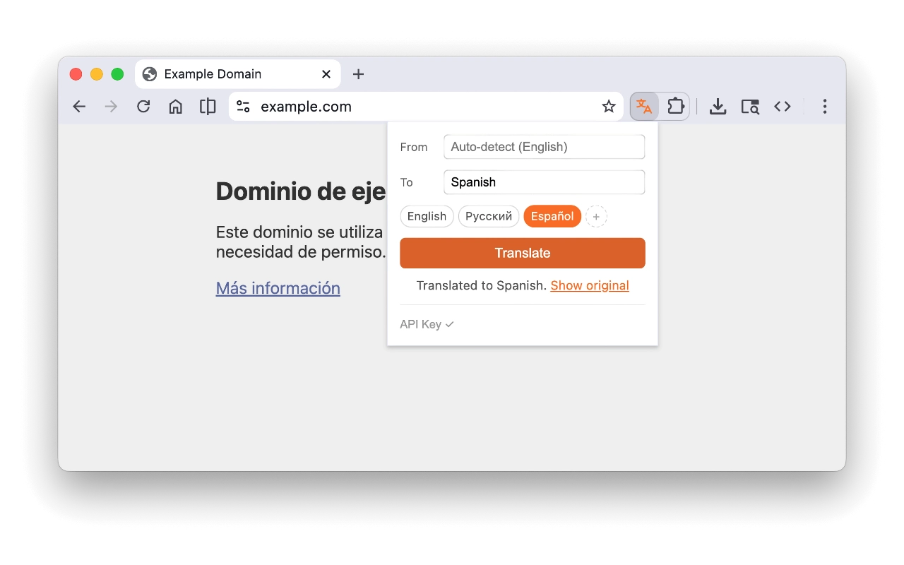

Yaku
Translate web pages with your own Google API key
- Translates page text in place — no redirects, no iframes
- Uses Google Cloud Translation API (you bring your own key)
- Works on any page, any language
- Lightweight, no tracking, fully open source

